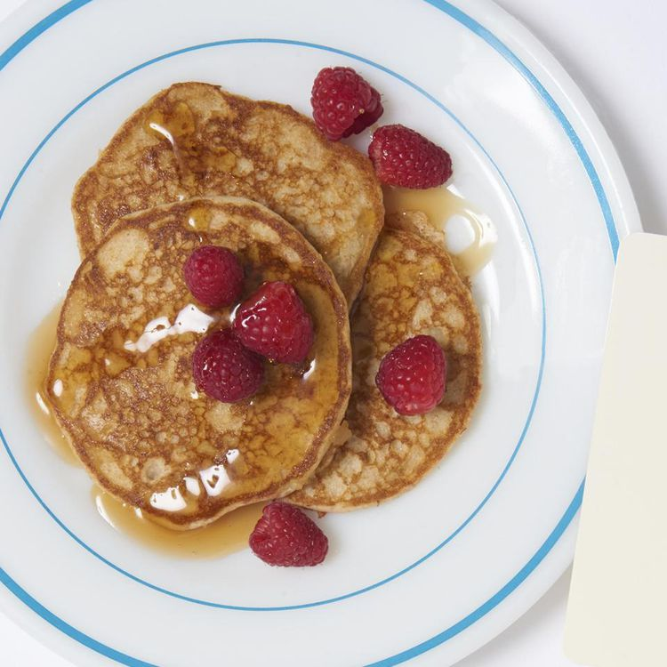

Whole Wheat Pancakes

How to make Whole Wheat Pancakes
These are very light and tender pancakes. these pancakes are excelent with maple syrup
Pancakes Ingredients
- 1 cup whole wheat flour
- 2/3 cup all-purpose flour
- 1/3 cup wheat germ
- 1 1/2 teaspoons baking powder
- 1/2 teaspoon baking soda
- 2 tablespoons brown sugar
Steps
- In a food processor or in a large bowl, combine the whole wheat flour, white flour, wheat germ or oats, baking powder, baking soda, brown sugar, and salt.
- Cut the butter into small pieces with a knife, and add the butter to the flour-mixture. Mix until the mixture has a sand-like consistency.
- Make a well in the center of the flour-butter mixture, and add the buttermilk and eggs. Stir until the liquids are fully incorporated.
- Heat a frying pan over medium heat and grease the surface with 1 tablespoon of butter or oil. Ladle the batter onto the surface to form 4 inch pancakes. Once bubbles form on the top of the pancakes, flip them over, and cook them on the other side for about 2 minutes.
Home